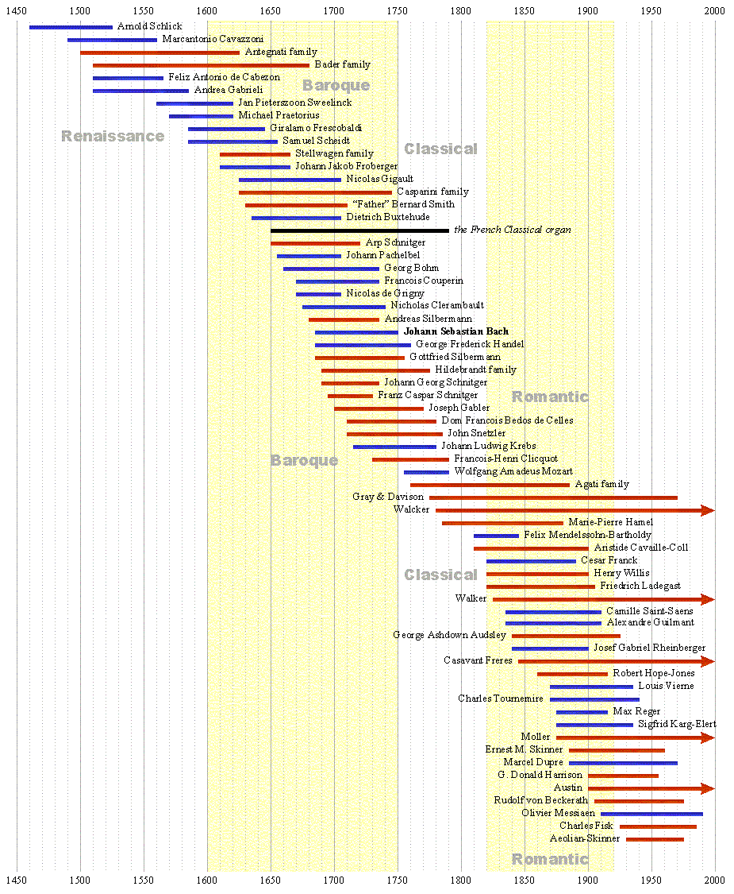

Timeline of Organ History | Home |
This timeline illustrates the lifespan of various influential organ composers, organ builders, and organ building firms. Composers are shown in blue, organ builders are shown in red. The major historical periods are also shown.
|
Original website compiled by Edward L. Stauff. For educational use only. Timeline.html - Last updated 16 August 2001. | Home |